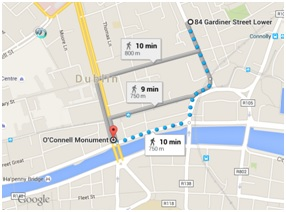
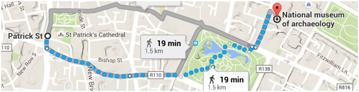
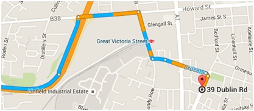
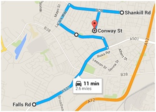
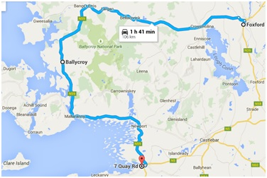
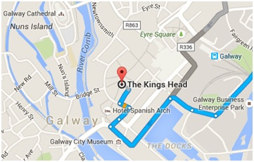
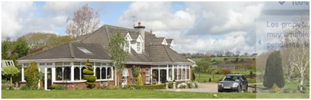
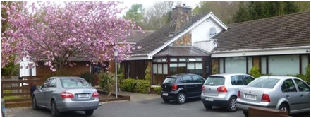
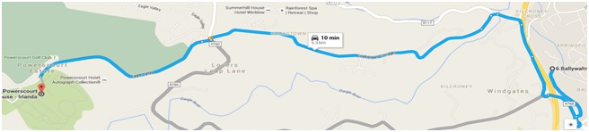

Moneda: Euro en República de Irlanda · Libra esterlina (£) en Irlanda del Norte (Belfast, Derry) · Conducción: Por la izquierda · Coche de alquiler: BUDGET · Reserva 1360-9742-ES-6 · Recoger en 151 Lower Drumcondra Road, Dublín (Día 3) · Entregar en aeropuerto de Dublín a las 12:00h (Día 12) · Peajes: A1/M50 ~1,80 € · Vuelo: Vueling BCN T1 → Dublín T1 · Código ODTKKK
Barcelona → Dublín — Llegada y paseo por el centro
Bus al hotel: Airlink 747 · Bajarse en la 6ª parada (Gardiner Street Lower) · Cada 15 min hasta las 20:30h · Después: 21:10, 21:30, 21:50, 22:10, 22:30, 22:50, 23:10, 23:30 · Tickets en máquina de vending o en Bus & Rail information desk · 6 €/persona · Taxi: 25-35 €
Hotel Hazelbrook GuestHouse
85 Gardiner Street Lower · Dublin · 53.351750, -6.254901
Custom House — Casa de la Aduana
Bajar por Gardiner Street Lower hasta Eden Quai y girar a la izquierda para verla.
Abbey Theatre
Seguir por Eden Quai a la derecha y subir la primera a la derecha por Marlborough St. El teatro nacional de Irlanda.
Monumento a Daniel O'Connell + O'Connell Street
Continuar a la izquierda por Abbey Street hasta O'Connell Street. Bajar para ver el monumento a Daniel O'Connell.
Ha'penny Bridge + Temple Bar
Seguir a la izquierda por Eden Quai hasta el Ha'penny Bridge. Cruzar y seguir por la calle Temple Bar (paralela a Wellington Quay) a la izquierda, segunda esquina a la derecha.

Oliver St. John Gogarty's
De lunes a viernes hasta las 2AM música en directo sin recargo. En la segunda planta: menú de 2 platos por 22€ (sopa y carne). Si está lleno: The Brazen Head o Fitzsimons.
Vuelta al hotel: por O'Connell St → Earl St → Gardiner St.
Dublín — Castillo · Catedrales · Trinity College
Dublin Castle + Christ Church Cathedral
Con el bus se pasa por City Castle antes de llegar. Justo al lado, Christ Church Cathedral: muy bonita desde fuera, tiene un puente que cruza una calle · 6 €. La cripta es más divertida: ver el gato y la rata momificados — se cree que el gato perseguía a la rata y que ambos quedaron bloqueados en un tubo del órgano durante años y así se momificaron.
St. Patrick's Cathedral + St. Patrick's Park
Pasar antes por St. Patrick's Park (buenas vistas de la catedral desde el parque). Ver el coro y el transepto norte con todas las banderas de los regimientos irlandeses del Ejército británico.
Museo Nacional de Arqueología
Ir por Kevin Street Upper a la izquierda. Atravesar primero St. Stephen's Garden, salir por Kildare St. La puerta del museo está cerrada pero se puede abrir perfectamente: admirar los 2 esqueletos del gigantesco alce irlandés y la entrada muy bonita.

Trinity College
Visita guiada e imprescindible el Libro de Kells (10 €). Saliendo de la biblioteca: ver la escultura "Esfera dentro de una esfera", la capilla y el hall del edificio del museo.
The Bank on College Green
Antiguo banco transformado en bar/restaurante. El interior es muy bonito. Subir andando al hotel: 1,2 km.
Guinness Storehouse · Brú na Bóinne · Belfast
Guinness Storehouse
Ir directamente a las taquillas de prepago. Cada entrada adulta incluye una pinta. 7 plantas que ilustran el rico pasado de Guinness desde St. James's Gate hasta su expansión global. Atractivos principales: el Atrium (el contrato de 9.000 años de Arthur Guinness en el suelo de la pinta más grande del mundo), el proceso de elaboración guiado por el Maestro Cervecero Fergal Murray, la 4ª planta para tirar tu propia Pinta Perfecta y recibir el certificado, y el Gravity Bar con vistas 360° de Dublín.
Bus al Storehouse: Bus 123 desde Parnell Street → Bus hacia Kilnamanagh Rd (21 min, 10 paradas, ID parada 4513) → bajarse en James St.
Brú na Bóinne: 50 km / 42 min · Por M50 → M1 → salida 9 → L1601 → Staleen Rd · Peaje M50: 1,80 €
Brú na Bóinne — Knowth y Newgrange
Knowth: Túmulo funerario de 3200 a.C. La mayor colección de elementos figurativos de todas las tumbas de corredor de Europa Occidental. Visita guiada ~40 min (en inglés) + 15 min libre.
Newgrange: La mayor tumba de corredor de la Edad de Piedra de Irlanda. Muro circular de piedra blanca, cúpula cubierta de hierba, 80 m de diámetro y 13 m de alto. Pasillo estrecho con tallas en roca y cavidad interior donde se recrea el solsticio de invierno. La entrada al Centro de Visitantes ofrece un mirador previo a Newgrange (vale la pena verlo antes de la visita guiada). En la entrada te ponen 2 pegatinas con los horarios.
ETAP Hotel Belfast
35-39 Dublin Road · Belfast · 54.591935, -5.932443

St. Anne's Cathedral + City Hall + MAC + River Lagan
Ir andando hacia St. Anne's Cathedral (1899, con la cruz celta más grande de la isla) pasando por el City Hall y Donegall Square (punto de partida de las principales atracciones de Belfast). Echar un vistazo al llamativo Centro Metropolitano de Arte (MAC). Acercarse al River Lagan. Coger taxi o metro para ir a la zona de Titanic Square. Pub muy famoso cerca del hotel: The Crown Liquor Saloon.
Murales de Belfast · Carrick-a-Rede · Calzada de los Gigantes · Dunluce · Derry
Murales de Belfast — Falls Road y Shankill Road
Zona de Falls Road (barrio republicano/católico). Vuelta por las diferentes calles de alrededor: segunda a la derecha por Cuper Way → Lanark Way a la derecha → Shankill Rd (calle principal del barrio protestante, paralela a Falls Road) → bajar a la derecha por Conway St.

Puente Colgante Carrick-a-Rede
Dejar el coche en el parking y bajar por el camino indicado. Tras 5 min aparece el puesto de información donde se compran los tickets (5,60 £/persona). La bajada es de poco más de 1 km. Una vez en la isla: vistas de los acantilados que la rodean. Estar ~1 hora. De vuelta, parar en uno de los miradores para ver el puente desde otra perspectiva.
Calzada de los Gigantes — Giant's Causeway
Pagar las 6 libras del parking (funciona como entrada). Volver sobre los pasos para coger el camino directo a la Calzada. Hay un autobús por 1 libra; si no, 1,5 km andando con vistas magníficas. Al final del camino: las primeras columnas de basalto. Ojo: no hay bares ni restaurantes. Coger el bus de vuelta.
Castillo de Dunluce
Fortaleza de los Mc. Donnell que se remonta al siglo XIII. Conserva sus torres gemelas. Dar una vuelta por los alrededores: vistas espectaculares.
Number 8 The Townhouse
8 Artillery Street · Derry · Ojo: la calle Artillery es de subida
Catedral St. Columb's + Murallas de Derry + Tower Museum
Recorrer el circuito marcado en la guía por el interior de las murallas (1 hora). Parar en el Tower Museum si está abierto: historia de la ciudad y mapa de Isabel I.
Castillo de Glenveagh · Glen Gesh Pass · Slieve League · Abadía de Sligo · Ballina
Castillo de Glenveagh — Parque Nacional
Dejar el coche en el parking, al Centro de Visitantes y luego bus interno hasta la entrada del castillo (4 km). Paisaje impresionante. Visita guiada al castillo (40 min, 5 €) + paseo por los alrededores y los jardines (~1h30). Construido entre 1867 y 1873.
Cascada de Assarancagh + Glen Gesh Pass
Camino a la playa de Maghera donde se alza la cascada de Assarancagh. Paisajes impresionantes. Después pasar por Glen Gesh Pass (14 min / 10 km por R250).
Slieve League
La estrecha carretera de acceso atraviesa un paisaje espectacular. Después de ~1h30, llegar a un parking: justo al lado hay una valla cerrada que se puede abrir para llegar al parking de Slieve League, desde donde empieza un sendero con vistas espectaculares. De no atravesar la valla: subir una pendiente de casi 3 km. Dejar el coche al margen de la carretera y ascender poco a poco los acantilados.
Abadía de Sligo
Visita exterior a través de las verjas de camino a Ballina.
Whitestream House
Foxford Road · A la salida del pueblo de Ballina
Parque Nacional Ballycroy · Achill Sound · Isla Clare · Westport
Parque Nacional de Ballycroy
Una de las mayores extensiones de turberas de Europa: 117,79 km² de blanket bog atlántico. Montañas Nephin/Owenduff. Hábitat único con variada flora y fauna. Seguir hasta Mallaranny y de ahí la R319 a Achill Sound (14 km / 16 min), donde está Sraheens Bog, un área natural. Dar una vuelta por la península.
Broadlands B&B
10 Quay Road · Al coger la carretera hacia la quay de Westport, segunda calle a la izquierda (ahí está el cartel)

Isla Clare — Clare Island Ferry Co (O'Grady's)
Horario ferris miércoles: Ida 10:15, 11:00, 13:00, 16:45h · Vuelta 17:20, 18:30h · Coger el de las 13:00h y volver a las 17:20h. Tickets disponibles por internet.
Cosas para ver en la isla: The Abbey (iglesia medieval del s. XII, únicas pinturas murales medievales supervivientes de Irlanda), The Castle (fortaleza de la Reina Pirata Grace O'Malley / Granuaile, s. XVI), The Napoleonic Tower (torre de señales de 1804), Yacimientos arqueológicos (53 misteriosos montículos de la Edad de Bronce), Church of the Sacred Heart (1860-62), Sea Cliffs (acantilados norte, de los más espectaculares de Europa), Blue Flag Beach (junto al puerto) y The Lighthouse (guardián de Clew Bay).
Cenar en Westport
Volver al hotel y cenar en Westport.
Abadía de Kylemore · Connemara · Sky Road · Roundstone · Galway
Comprar comida antes de salir de Westport.
Abadía de Kylemore
Enclave espectacular a la espalda de una montaña y a orillas del lago Pollacappul. Convento de monjas benedictinas (fundado en 1920) sobre el castillo de Kylemore, construido entre 1863 y 1868 por Mitchell Henry. Kylemore viene de las palabras irlandesas Coill Mór (gran madera). Impresionantes vistas desde la parte frontal y lateral. Mitchell y su esposa Margaret están enterrados en el mausoleo junto a la iglesia. No hacer la visita interior (13 €).
Parque Nacional de Connemara
Montañas pintorescas (Diamond Hill, 445 m; Benbaun, Bencullagh, los Doce Bens), ciénagas, brezales, praderas y bosques. Centro de Información: 3 exposiciones 3D, proyección audiovisual, zona de picnic y salón de té. Ruta recomendada: Sruffounboy Walk (1,5 km).
Clifden + Sky Road
Pequeño pueblo desde donde parte la famosa Sky Road. Pasear por la plaza central y la calle principal. Visitar sus dos iglesias (una católica y una protestante). Coger el coche para hacer la Sky Road.
Roundstone
Paisajes espectaculares bordeando la costa en todo momento. Se puede comer en Roundstone.
Carraig Villa
Cloonacauneen · Tuam Road, N17 · 53.315827, -8.994061 · Check-in y luego ir a visitar Galway
Galway — Eyre Square + Collegiate Church
Empezar por Eyre Square y seguir por la Collegiate Church justo al lado.
The King's Head
Cenar en el pub The King's Head. Volver al hotel.

Kinvara · Dolmen Poulnabrone · Acantilados de Moher · Bunratty · Killarney
Castillo de Dunguaire — Kinvara
A 1 km antes de llegar a Kinvara. Construido en el siglo XVI (75 pies de alto) con muralla defensiva recientemente restaurada. Lo construyó el clan Hynes en 1520; pasó a los Martin y luego al poeta Oliver St. John Gogarty, quien lo restauró y convirtió en punto de encuentro del revival céltico con Yeats y Bernard Shaw. El más fotografiado de toda Irlanda. Kinvara: uno de los pueblos más bonitos de Irlanda con sus casas blancas y techos de paja.
Dolmen Poulnabrone — The Burren
En irlandés Poll na mBrón, "agujero de penas". Enterramiento neolítico (4200–2900 a.C.): piedra lisa de 3 metros que descansa sobre otras dos en forma de puerta. En 1985 hubo que desmantelarlo para reparar una grieta: se descubrieron los restos de al menos 33 personas, un hacha de piedra, un colgante de hueso, cristales de cuarzo, armas y cerámica.
Kilfenora — High Crosses
Atravesar el cementerio para llegar a la zona donde tienen expuestas las famosas cruces celtas.
Acantilados de Moher — Cliffs of Moher
Se elevan 120 m sobre el Atlántico en Hag's Head y alcanzan 214 m de altura a lo largo de 8 km. La Torre de O'Brien (construida en 1835 por Sir Cornellius O'Brien) permite ver las Aran Islands, la Bahía de Galway y las montañas Maumturk en Connemara. Centro de visita y estacionamiento en el lugar. Sendero que recorre los acantilados en toda su longitud.
Castillo de Bunratty + Folk Park
Reserva 3 visitantes · 10:00h · Ref. W0562836. Construido en 1425 en Newmarket-on-Fergus. Historia fascinante: vikingos (970), normandos (1270), destruido y reconstruido varias veces hasta su forma actual, construida por los Mac Namara hacia 1425 y luego en manos de los O'Brien.
Countess House
5-17 Countess Road · Killarney · Cenar en el hotel o en Killarney
Anillo de Kerry — Killarney · Kenmare · Waterville · Isla Valentia
Killarney National Park
El primer parque nacional de Irlanda (creado cuando la Casa Muckross fue donada al estado en 1932). Más de 102 km². Lagos de Killarney, bosques de roble y tejo de importancia internacional, ciervos rojos (los únicos de Irlanda) y el más extenso bosque nativo restante en Irlanda.
Molly's Gap → Kenmare → Waterville
Pasar el paso de montaña de Molly's Gap (51.938850, -9.658271) y tomar dirección Kenmare (10 km). Desde allí, girar al oeste siguiendo la costa sur de la península. Waterville (61 km por N70): paisaje totalmente espectacular, parar para hacer fotografías.
Isla de Valentia
Uno de los lugares habitados más occidentales de Europa (650 personas, 11 km × 3 km). Cruzar el puente en Portmagee y dar una vuelta por la isla. Historia: punto de conexión del primer cable telegráfico transatlántico (entre Foilhommerum Bay y Terranova/Canadá, definitivamente en 1866, tras intentos fallidos en 1857, 1858 y 1865). Los cables funcionaron desde aquí durante 100 años hasta 1966. En 1993 se descubrieron huellas fósiles de tetrápodos del período Devónico: de las más antiguas señales de vertebrados sobre la tierra.
Ballymore House
Ventry · Después de pasar Ballymeenbocht, seguir recto hacia el mar
Península de Dingle · Blarney
Península de Dingle
Dar una vuelta por la península llegando hasta la punta Coumeennoole para ver la isla de Blasket. El punto más occidental de Irlanda.
Alternativa: Visitar Cork (12 km / 20 min por R579 y N22) o cenar en Blarney.
Westwood Country House
Tower · Blarney · 51.926213, -8.628047

Castillo de Blarney · Rock of Cashel · Kilkenny · Bray
Castillo de Blarney
Antes de llegar al castillo: jardines espectaculares con Druid's Circle, Witch's Cave y las Wishing Steps. La famosa Piedra de Blarney está en la parte de arriba: según la leyenda, besarla por la parte de abajo estando suspendido en el vacío otorga el don de la elocuencia. Ojo con el "show": hay hombres que ayudan a adoptar la postura y un fotógrafo que dispara automáticamente (foto por 10 €). Castillo fundado en el s. XIII, destruido en 1446 y reconstruido por Dermot McCarthy, rey de Munster. Conserva la torre del homenaje y algunas habitaciones.
Rock of Cashel
Una de las ruinas más bonitas de Irlanda. Asentamiento de los reyes de Munster desde el s. V. La mayoría de edificios actuales son del s. XII y XIII. Parcialmente destruido por Cromwell en 1647. Elementos principales: Torre circular (28 m, el más antiguo, ~1100), Capilla Cormac (consagrada en 1134, con uno de los mejores frescos irlandeses conservados), Catedral (1235-1270, cruciforme con torre central), Palacio Arzobispal (s. XV), Cruz de San Patricio (original del s. XII en el museo de la cripta), y un Cementerio con cruces celtas. Si gastas 15 € en la ciudad, dan una entrada gratis.
Kilkenny — Parada rápida
Entrar por Parlament Street, ver la Rothe House y aparcar en The Parade St para ver el castillo de Kilkenny desde fuera. Aprovechar para comer.
Woodville B&B
6 Ballywaltrim Lane · Bray · 53.186103, -6.135648

Cenar en el paseo de la playa de Bray
Seguir por la calle del hotel → Killarney Rd → girar a la derecha por Novara Ave → recto hasta Strand Rd. La vuelta: 5 km.
Powerscourt — Vuelta a Barcelona
Powerscourt Estate
Levantarse pronto. Obra del arquitecto Richard Cassels, encargada por Richard Wingfield (Vizconde de Powerscourt). Construcción iniciada en 1731 sobre un castillo normando. La mansión sufrió un grave incendio en 1974 que destruyó su interior; actualmente es propiedad de la familia Slazenger. Los jardines (terminados entre 1858 y 1875: puertas, estatuas y urnas) están entre los más importantes de Irlanda: jardín italiano, jardines japoneses, lago del tritón, cementerio de mascotas, fuente del delfín, jardines amurallados.

Vuelo: Vueling DUB → BCN · Salida 14:20h Terminal 1 · Código ODTKKK · Llegada T1 Barcelona 18:00h
🍀 Fin del viaje